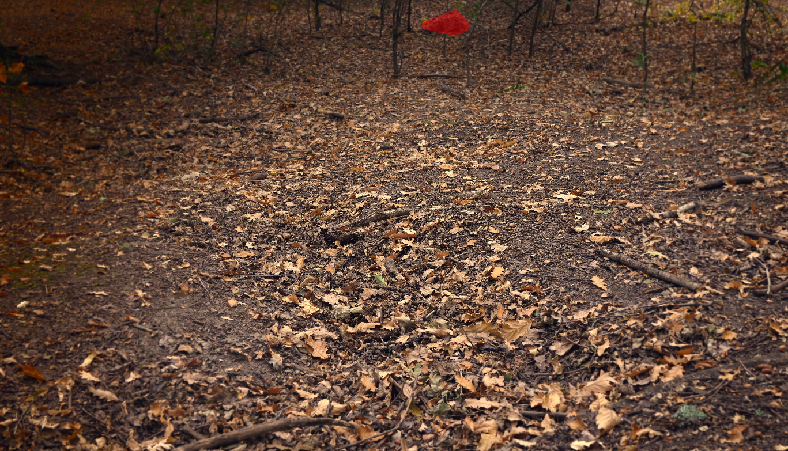

Target Detection Made Easy
EMCOD is a Bachelors of Engineering thesis developed to demonstrate that CNNs can be deployed effectively on relatively low-cost hardware.
We do this by prototyping a RiS rail scope that highlights camouflaged silhouettes in real time.

See What the Eye Misses
We conducted tests in which ASG players wearing WZ and MAPA camouflage patterns hid across the abandoned military base in Pierwoszyno, and our prototype highlighted all of them.
Runs Locally
The scope operates as a fully self-contained system with no radio, Wi-Fi, or Bluetooth connectivity, making it inherently resistant to jamming, interception, and external wireless interference.
Cost Effectiveness
Advanced target detection capabilities can therefore be achieved without relying on complex and expensive multispectral imaging systems.
Technical Details
The scope runs on NUCLEO-N657X0-Q utilizing threadx for the rtos and SINet-v2 for camouflage detection. Our target goal is a stable framerate of 30fps and max delay of 20ms.
Contact
Artur Tomasiak
arturkrystiantomasiak@gmail.com
https://github.com/ArturTomasiak
Anna Turowska
misakuja@proton.me
https://github.com/Misakuja
Marcel Stankiewicz
ateosu@pm.me
https://github.com/Ateoyu